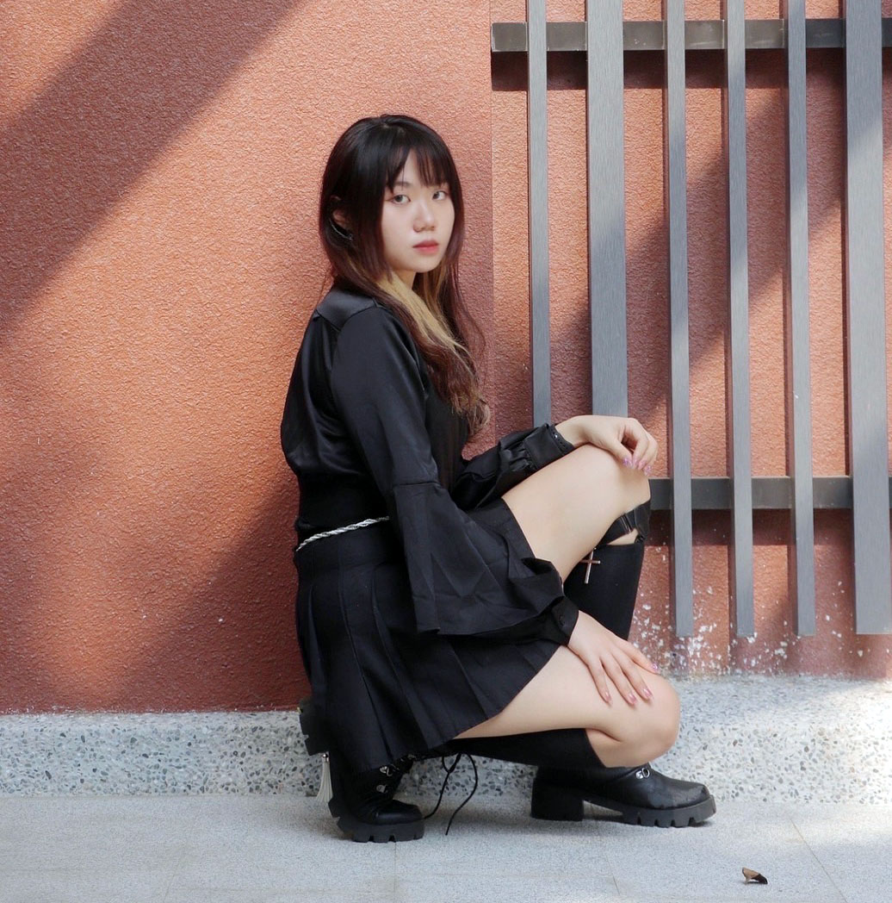
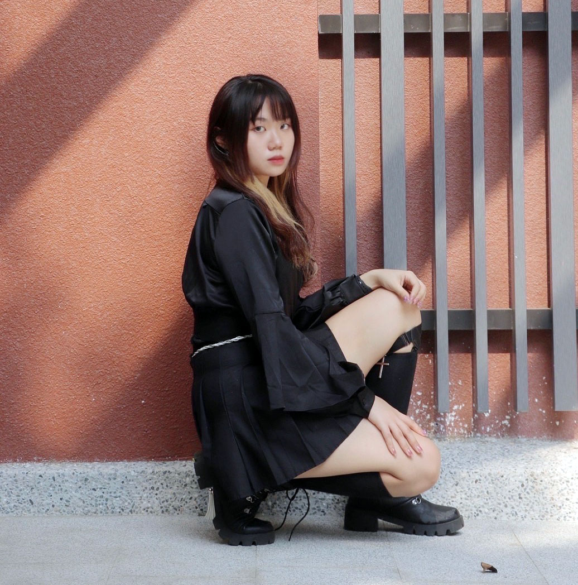

About me
姓名:蔡昀芯 聯絡:0906150885 地址:台灣桃園 信箱:anna92071983@gmail.com 學歷:大學 我喜歡閱讀，每本書有著不一樣的故事，能讓我體會與 自己不一樣的人生，我並不擅長與人交際，更喜歡用繪畫、文 章來表達自己，對於這世界我有很多的想法，以前我認為繪畫 是為了讓這世界增添色彩，直到我接觸設計，我才了解我需要 改變這世界既有的色彩。
經歷
2016 捏塑社 副社長 2017 技藝教育 設計職群 2019 糾察隊 副社長 2019 視覺傳達設計證照 丙級 2019 電腦應用專業能力 Word 2016企業級 2019校內全國學生美術比賽-平面設計 入選 2020校內全國學生美術比賽-平面設計 入選 2020 印前製程證照-PC 丙級 2021 印前製程證照-PC 乙級 2021 CWT全民中檢 中等 2021 LCT中文聽力理解 白晶